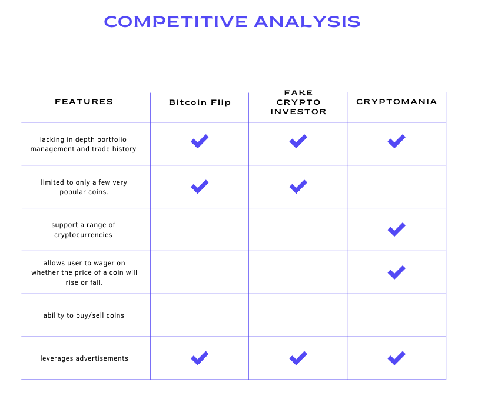
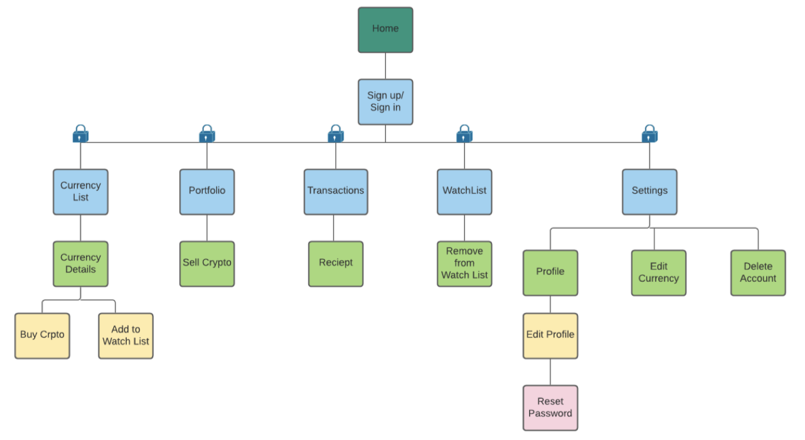
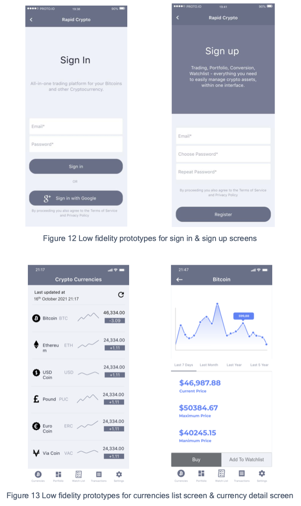
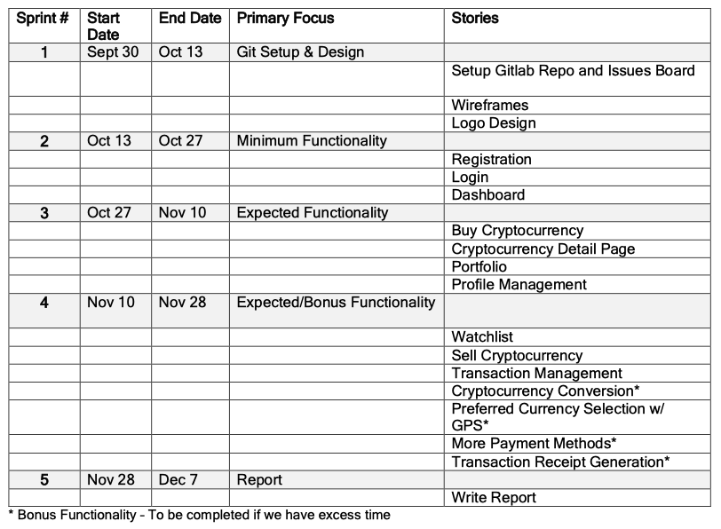
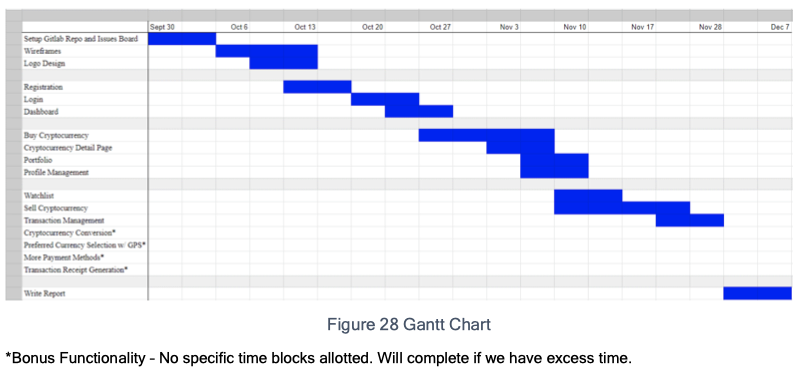
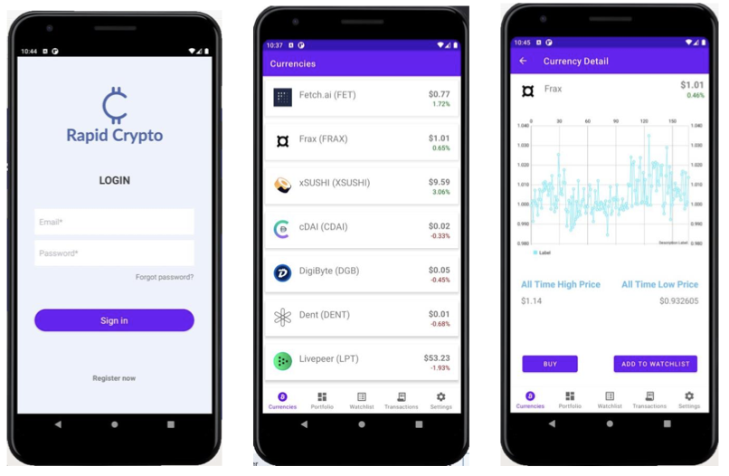
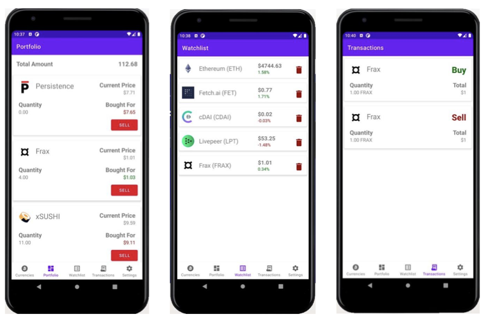

CSCI 4176 Mobile Computing Course Project.
Rapid Crypto is an application developed in a 5-person team for our Mobile Computing Project. The objective of this project was to create a interesting and useful app that targets any user-groups of our choosing.
Cryptocurrency has become increasingly popular and valuable over the last few years, and some believe it may even replace traditional currency in the future. However, investing in cryptocurrency can be intimidating for newcomers.
Our goal was to primarily target users who want to learn how to utilize cryptocurrency. Inexperienced users are scared to invest their money due to the risky nature of the crypto market. Thus, by creating a safe and realistic environment that mimics a crypto exchange app, we are allowing users to become familiar with the many ways in which these currencies/coins are acquired and exchanged.
Competitive analysis | Minimum & Expected functionalities | User Stories
Sitemap & Clickstreams | Low-fidelity prototypes | Implementation plan
User Stories walkthroughs
Evaluating for visual Design Principles | Style guide
There are several applications in this space already that come up short. Many are extremely basic, lacking in depth portfolio management and trade history, or are limited to only a few very popular coins. We chose three potential competitors to analyze: Bitcoin Flip, Fake Crypto Investor, and Cryptomania.
Cryptomania is an application that more closely resembles what we hope to accomplish, however as stated in its description users don’t buy and sell coins as they would on a real exchange. Instead, it’s more like they wager on whether the price of a coin will rise or fall. Rapid Crypto will have all the basic functionality you'd expect to see in a real cryptocurrency exchange application, including login, profile management, buying and selling crypto, a coin watchlist, crypto conversion, and more. Additionally, Simulator Cryptocurrency trading leverages advertisements in a way that interrupts a smooth user experience, offering users more account credit if they watch advertisements. Rapid Crypto on the other hand isn’t about maxing out your portfolio or needing watch ads to receive funds. It’s designed for users to practice in whatever way helps them improve their trading skills and avoiding arbitrary hurdles that encourage watching ads just so they can continue using the app.
In creating this cryptocurrency trading application, there are several aspects and basic functions that must be included. So, we decided on keeping the below features as minimum functionality.
For making the application more useful to the users, we need to provide some more functionalities which help the user to decide on choosing which cryptocurrency to buy, track their portfolio (previously bought cryptocurrencies along with current prices) and sell already bought cryptocurrencies. So, we decided to implement the below features as expected functionality.
Based on the research insights, we developed user personas to capture our target user's feelings, needs, and expectations.
Based on our research and user stories, we defined Rapdid Crypto's product structure. We aimed at keeping the structure simple with no more than 5 levels of depth.
The images below show some of the low fidelity prototypes of the application.
The table and chart below show the sprints that we aimed to conduct to achieve the project goals.
 We followed agile methodology for this application development, we updated each user story to a finished state after all of the modifications meet our definition of done. Each user story contained a set of acceptance tests that must be passed before going on to the next user story.
The Rapid Crypto colour palette is analogous, mainly consisting of different shades of purple and blue. Before choosing this colour scheme, research was done on the psychology behind colours. Purple mixes the vibrancy of red with the calmness of blue, and gives an uplifting effect to users. We also chose these colors and designed the app in a way to promote for gender inclusivity. We aim to create a product that is as equally engaging, useful, and effective for as many users as possible.
 